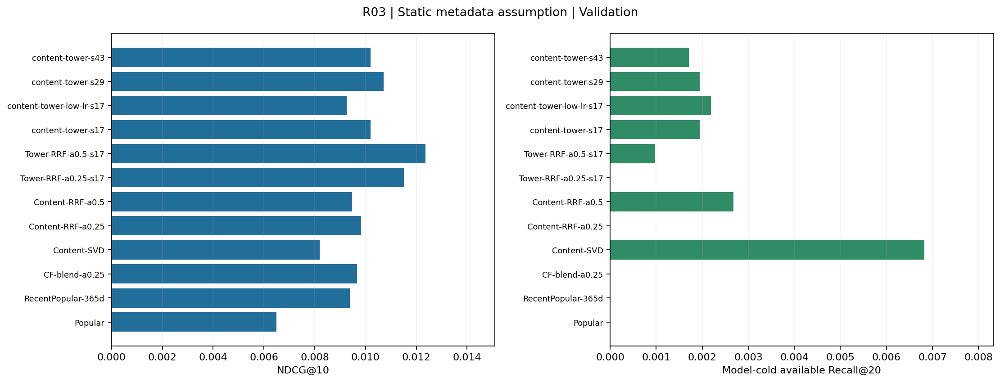
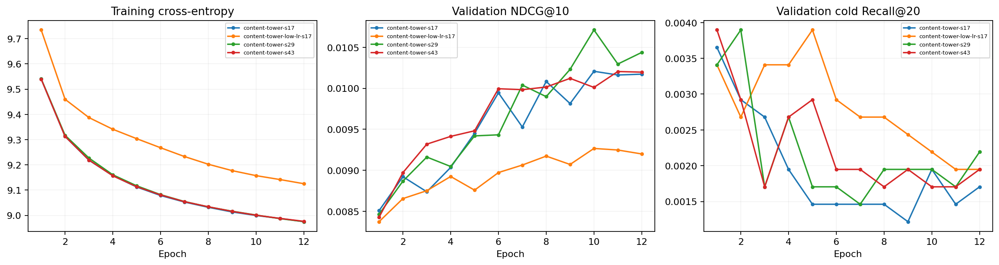
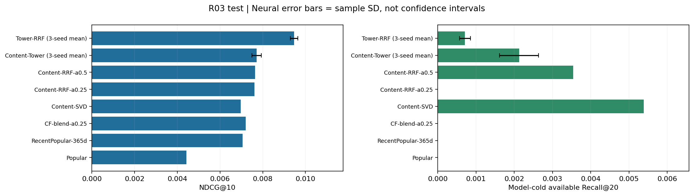

状态：completed · 协议：b84be690895554be · 2026-09-15T09:16:02.603292+00:00
本轮使用新的用户哈希分组，用户与 R01 / R02 不重合；商品与时间区间仍重合。
商品标题与类别来自静态快照，缺少历史版本时间戳。以下结果成立于静态内容可用假设，不证明严格历史内容回放或线上收益。
文本词表、IDF、SVD 和双塔参数只使用本轮训练商品 / 交互；商品目录中的其他内容仅经过冻结编码器转换。
每轮训练自动更新本页；HTML 每 30 秒刷新。完成后保留结果，不自动重复调参。
验证集选中的双塔学习率为 0.001。
按验证 NDCG@10 选中的单次方法为 Tower-RRF-a0.5-s17；测试 NDCG@10=0.009400，模型冷且可用分组 Recall@20=0.000851。
纯内容路径的测试冷商品 Recall@20=0.005389。内容可进入候选与整体排序质量需要分别评价。
双塔融合的三种子测试 NDCG@10 为 0.009470 ± 0.000176，相对本轮 CF-blend-a0.25 的观测差值为 +31.4%。尚未进行显著性检验。
纯内容路径保留了更多冷商品命中，融合方法的整体排序更好但冷商品命中更少。当前已打通候选入口，绝对召回率仍需继续改善。


